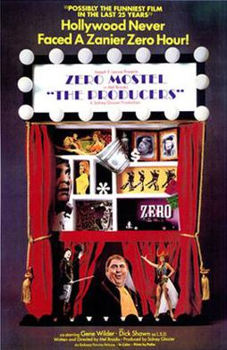

Mel Brooks
1967
88 minutes
TITLE: The Producers TEXT PLACEHOLDER 008
This film gives you happy memories of recording Doctor Demento radio shows off the radio onto cassette tape during your pre-teen years, a trait which you shared with your grad school roommate. You shrug off the memory before it gets too corny and reminds you too much of one of the Gen X Funnies Memes pages mercilessly force-fed to you by social media. But at some point you did record the notorious "Springtime for Hitler" song from the radio, only vaguely being aware of the existence of this film.
You think of the time you and your roommate took a road trip to Oshkosh, a pilgrimage to see a rare public appearance by Doctor Demento. He did not disappoint, but the crowd was somewhat horrifying. This was in the days where you could still be picky, and embracing others within your particular niche fandom didn't feel nearly as obligatory. You and your roommate engaged in a rather cruel-feeling game upon seeing the various weirdos and misfits in the crowd. It was a game would occasionally play together on the bus or in other public places where you were bored and surrounded by people you didn't want to be around. The game was called "I'm Glad I'm Not That Person". You would simply point out a person and declare, "I'm glad I'm not that person". You initiated this game while waiting for Doctor Demento to take the stage.
The crowd of poor cosplayers and furries and nerds and other misfits present made this game feel like shooting fish in a barrel. At one point you thought you had won the game by pointing out a man who looked like an extremely hygiene-challenged doppelganger of Weird Al. He was wearing a filthy Hawaiian shirt and sporting an unironic mullet and unfortunate facial hair. Your roommate then pointed out the man's romantic partner and declared "I"m glad I'm not that person" and won the game forever.
The gleeful comical Nazis in this film remind you of the gleeful serious Nazis of today who didn't exist at the time--or at least were much more shunned. You feel a bit saddened at the thought of this and guilty for even playing the previously-described game. There are obviously worse things than being cringey. Much, much worse. Fly your freak flag high, and never shun anyone else because their flag is more tattered or obviously homemade or just smells suspiciously weird.
Time to choose something different: